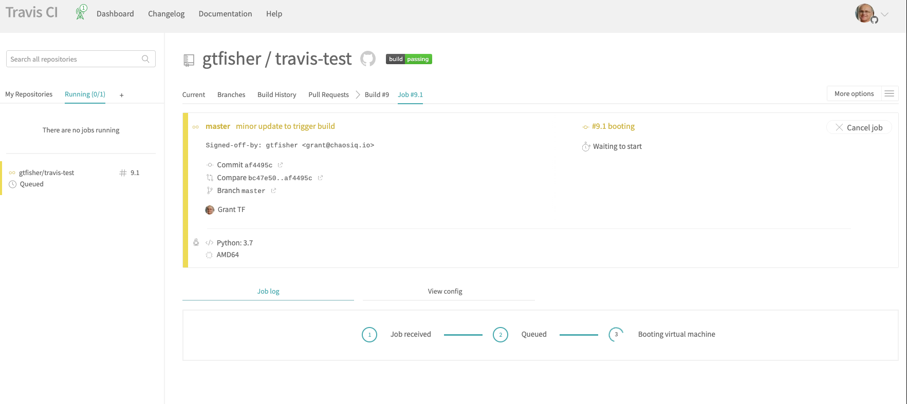
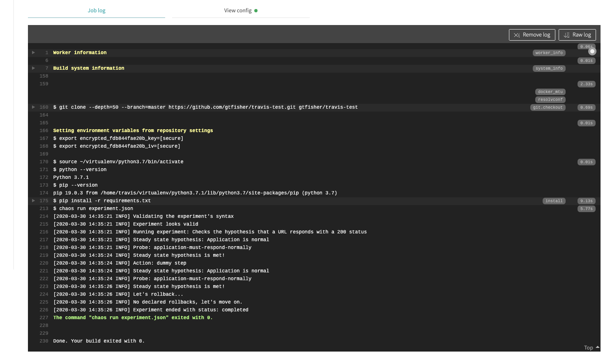

Run a Chaos Experiment
This section covers running a Chaos Toolkit experiment on Travis. If you start with a local working directory, you can push this to a Github repository at a later step to get things running on Travis.
Create an Experiment File¶
You will need an experiment to run on Travis so you could use one of your own experiments or you could use the following as a starting point:
{
"version": "1.0.0",
"title": "Checks the hypothesis that a URL responds with a 200 status",
"description": "Check a given url responds with a 200 status",
"contributions": {
"availability": "none",
"reliability": "none",
"safety": "none",
"security": "none",
"performability": "none"
},
"steady-state-hypothesis": {
"title": "Application is normal",
"probes": [
{
"type": "probe",
"name": "application-must-respond-normally",
"tolerance": 200,
"provider": {
"type": "http",
"url": "https://httpstat.us/200?sleep=2000",
"timeout": 3
}
}
]
},
"method": [
{
"type": "action",
"name": "dummy step",
"provider": {
"type": "process",
"path": "echo",
"arguments": "URL used is: https://httpstat.us/200?sleep=2000"
}
}
],
"rollbacks": []
}
The experiment above just checks a URL for a success response.
Configure Travis¶
You will need a travis configuration file, the following is a good starting point:
language: python
python:
- "3.7"
install:
- pip install -r requirements.txt
script:
- chaos run experiment.json
Add the above code to the .travis.yaml file.
The Travis config file uses Python 3.7 and pip to install dependencies from a requirements.txt file. The following is the initial requirements.txt you can can use:
chaostoolkit
chaos run command.
Run the experiment locally¶
Just to make sure everything is setup correctly run the experiment locally. Create a Python Virtual environment and run:
pip install -r requirements.txt
Now run the experiment with Chaos Toolkit:
chaos run experiment.json
When you run the experiment locally you should see output like the following:
[2020-03-30 15:26:58 INFO] Validating the experiment's syntax
[2020-03-30 15:26:58 INFO] Experiment looks valid
[2020-03-30 15:26:58 INFO] Running experiment: Checks the hypothesis that a URL responds with a 200 status
[2020-03-30 15:27:02 INFO] Execution available at http://console.chaosiq.io/ChaosIQ/Staging/executions/ae051a93-791a-42f2-8f28-9d054f452ad5
[2020-03-30 15:27:04 INFO] Steady state hypothesis: Application is normal
[2020-03-30 15:27:06 INFO] Probe: application-must-respond-normally
[2020-03-30 15:27:10 INFO] Steady state hypothesis is met!
[2020-03-30 15:27:13 INFO] Action: dummy step
[2020-03-30 15:27:16 INFO] Steady state hypothesis: Application is normal
[2020-03-30 15:27:18 INFO] Probe: application-must-respond-normally
[2020-03-30 15:27:22 INFO] Steady state hypothesis is met!
[2020-03-30 15:27:23 INFO] Let's rollback...
[2020-03-30 15:27:24 INFO] No declared rollbacks, let's move on.
[2020-03-30 15:27:25 INFO] Experiment ended with status: completed
This tells you the experiment.json is valid and runs locally and the Steady State Hypothesis is met.
Create a Github Repository¶
You will need a Github Repository to run with Travis. Create a repository for your build, you will need to allow Travis to access this repository to run the build. Once you have created your repository link it to your locally working directory using commands something like:
git remote add origin git@github.com:gtfisher/travis-test.git
Configure Travis for your Git Repository¶
You will need to ensure your repository is configured to run with Travis, the Travis CI Tutorial covers this.
Push to Github.¶
Now you have Travis configured and activated on your Github repository, you can push your changes to the repository and trigger a build on Travis:
git push -u origin master
When you have pushed your changes to Github, go to your Travis console and you should, after a brief delay, see a job running a build for your committed changes:

This shows your job has been scheduled and the build will start shortly. The build will then run and you will see output like:

This shows the output from the Travis job, it shows:
- Setting up a Python virtual environment
- The Python version number
- The pip version number
- The pip install from
requirements.txt - The execution of the
chaos run experiment.jsoncommand - The output from the command - this will be similar to the output shown when run locally.
We have now gone through the steps to configure and setup and experiment to run with Travis CI with a Github repository.